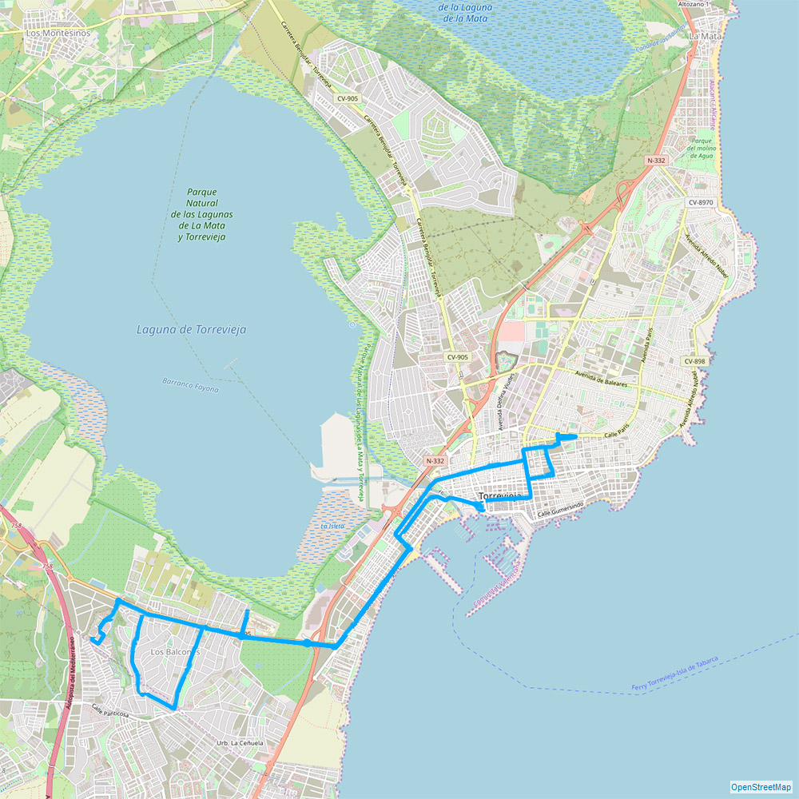

Из этих или других городов, Вы можете долететь до Аликанте: :
Из аэропорта в Аликанте можно доехать такси (цена ок. 50 €).
По Торревьеха и окрестностям можно перемещаться снятым напрокат велосипедом (также электрическим). Прокат велосипедов:
Калле лос Порталикос (Calle los Portalicos), 7, , просп. Доктора Грегорио Мараньон (Av. Dr. Gregorio Marañón), 43, Реал Клуб Наутико (Real Club Nautico), Пасео Висталегре (Paseo Vistalegre), 2A.
Амстердам, Антверпен, Астурия, Барселона, Берген, Базель (Швейцария)/Мюлуз, Белфаст, Берлин, Бильбао, Биллунд,, Борнмут,, Бирмингем, Бремен, Бристоль, Брюссель, Бухарест, Кардифф, Клуж-Напока, Кельн, Копенгаген, Корк, Донкастер, Дублин, Дюссельдорф, Эдинбург, Эйндховен, Эксетер, Франкфурт, Гданьск, Женева, Глазго, Гётеборг, Гамбург, Хельсинки, Хаугесунг, Ибица, Карлсруэ/Баден, Каунас, Киев, Краков, Лидс, Лестершир, Льеж, Лиссабон, Ливерпуль, Лондон, Маастрихт, Мадрид, Манчестер, Марсель, Милан, Модлин, Москва, Мюнхен, Ньюкасл, Осло, Остенде, Пальма, Майорка, Париж, Порто, Познань, Рейкьявик, Рим, Роттердам, Саннефьорд, Сантьяго-де-Компостела, Севилья, Шаннон, Саутенд, Ставангер, Стокгольм, Штутгарт, Трондхаейм, Вена, Варшава, Вроцлав.
Из аэропорта в Аликанте каждые 2 часа ездит автобус до центра Торровьехы. Следующий автобус довезёт Вас прямо к дому.Из аэропорта в Аликанте можно доехать такси (цена ок. 50 €).
По Торревьеха и окрестностям можно перемещаться снятым напрокат велосипедом (также электрическим). Прокат велосипедов:
Калле лос Порталикос (Calle los Portalicos), 7, , просп. Доктора Грегорио Мараньон (Av. Dr. Gregorio Marañón), 43, Реал Клуб Наутико (Real Club Nautico), Пасео Висталегре (Paseo Vistalegre), 2A.

Трасса B Торревьеха – Торретас (Torretas)
С октября по май: с понедельника по пятницу, каждые 35 мин. (с 07:30 до 22:00)
С октября по май: с понедельника по пятницу, каждые 35 мин. (с 07:30 до 22:00)
В выходные дни и праздники: каждые 65 мин. (с 07:30 до 22:00)
С июня по сентябрь: ежедневно, каждые 40 мин. (с 07:30 до 23:00)

Трасса A Аликанте – Ла Мата (La Mata (Avda. París))
С октября по май: с понедельника по пятницу, каждые 30 мин. (с 07:30 до 22:00)
С октября по май: с понедельника по пятницу, каждые 30 мин. (с 07:30 до 22:00)
В выходные дни и праздники: каждые 40 мин. (с 07:30 до 22:00)
Июль и август: ежедневно, каждые 15 мин. (с 07:30 до 23:00)
С июня по сентябрь: ежедневно, каждые 30 мин. (с 07:30 до 23:00)

Трасса C Торревьеха – Ломас (Lomas)
С октября по май: с понедельника по пятницу, каждые 35 мин. (с 07:30 до 22:00)
С октября по май: с понедельника по пятницу, каждые 35 мин. (с 07:30 до 22:00)
В выходные дни и праздники: каждые 65 мин. (с 07:30 до 22:00)
С июня по сентябрь: ежедневно, каждые 40 мин. (с 07:30 до 23:00)

Трасса D-F Торревьеха – Лос Альтос (Los Altos) – Росио дель Мар (Rocio del Mar)
С октября по май: с понедельника по пятницу, каждые 35 мин. (с 07:30 до 22:00)
С октября по май: с понедельника по пятницу, каждые 35 мин. (с 07:30 до 22:00)
В выходные дни и праздники: каждые 65 мин. (с 07:30 до 22:00)
С июня по сентябрь: ежедневно, каждые 40 мин. (с 07:30 до 23:00)

Трасса E Торревьеха – Лос Балконес (Los Balcones) – Лаго Жардин (Lago Jardín)
С октября по май: с понедельника по пятницу, каждые 35 мин. (с 07:30 до 22:00)
С октября по май: с понедельника по пятницу, каждые 35 мин. (с 07:30 до 22:00)
В выходные дни и праздники: каждые 75 мин. (с 07:30 до 22:00)
С июня по сентябрь: ежедневно, каждые 35 мин. (с 07:30 до 23:00)

Трасса G Торревьеха – Сан Луис (San Luís)
С октября по май: с понедельника по пятницу, каждые 35 мин. (с 07:30 до 22:00)
С октября по май: с понедельника по пятницу, каждые 35 мин. (с 07:30 до 22:00)
В выходные дни и праздники: каждые 65 мин. (с 07:30 до 22:00)
С июня по сентябрь: ежедневно, каждые 40 мин. (с 07:30 до 23:00)


Дополнительная трасса A-2, которая ездит трассой A:
С октября по май: ежедневно, каждые 60 мин. (с 07:30 до 22:00)